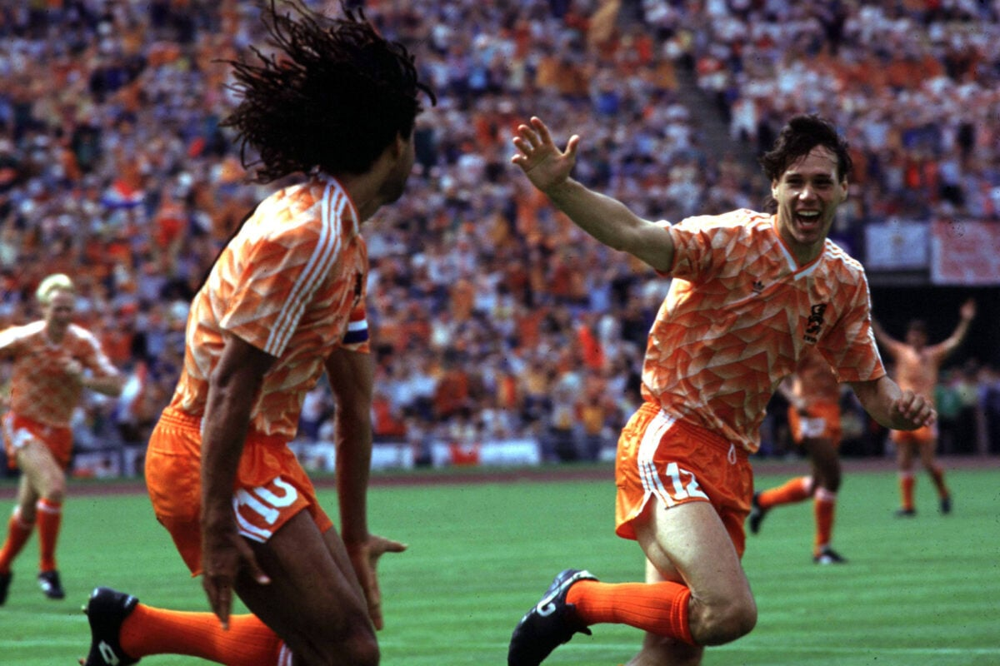

I’ve noticed a strange thing as I’ve gotten older: soccer just doesn’t feel the same. When I was a kid, every goal, every insane dribble, every unexpected twist of a match felt like pure magic. Watching a game could make your heart race in a way that felt almost unfair. But now, sometimes, I catch myself staring at a match and thinking, “Is this it? Where’s the excitement?” And I know I’m not alone—more and more people say soccer is becoming boring.
Part of it is how the game itself has changed. Teams play more cautiously, tactics are safer, and risk-taking is minimized. Players are incredibly skilled, but in today’s professional game, mistakes are punished immediately. What used to feel chaotic, unpredictable, and full of personality now often feels controlled, precise, and even a little bland.
The evolution of soccer as a business also plays a role. Players today feel more homogeneous than ever—athletic, fast, technically polished, but often lacking the quirks that used to make a superstar unforgettable. Teams, too, are less distinct. Historic styles and identities, whether the Brazilian flair, Dutch creativity, or English grit, can feel watered down. With globalization, analytics, and branding shaping the game, clubs often play in a way that looks similar, making matches feel predictable to a casual viewer.
But there’s another reason soccer can feel “boring,” and it has nothing to do with players or tactics: soccer isn’t art. It’s closer to war than a painting or a ballet. Each match is a battle of strategy, endurance, and psychological pressure. Teams probe each other for weaknesses, defend their positions, and strike when opportunities appear. The beauty isn’t always in a flashy goal or an acrobatic trick—it’s in the tension, the careful buildup, the cat-and-mouse of one team trying to outthink the other. That slow, cautious aspect is what can make a game feel boring at times—but paradoxically, it’s also what can make it brilliant. The smallest mistake, the tiniest lapse in concentration, can change the outcome entirely, and that high-stakes tension is thrilling if you know where to look.
Part of why soccer feels different as we grow up is our perspective. As kids, every pass or lucky bounce seemed magical. As adults, we notice defenses, build-ups, and missed chances, and the excitement feels more hidden. But it’s still there, in counterattacks, late goals, rivalries, and tournament drama. Soccer’s beauty isn’t always loud—it’s in the war-like chess match unfolding on the field, in the strategy, the patience, and the moments where a perfectly timed play can turn everything upside down.
So yes, soccer can feel safer, more polished, and more predictable than it once did. Players and teams may seem more homogeneous, the business of the sport is massive, and matches can sometimes feel slow. But that doesn’t mean it’s boring. Soccer’s beauty lies not in constant spectacle, but in tension, strategy, and the high stakes that can turn even the most cautious game into something unforgettable. Maybe it’s not about the game being less exciting—it’s about learning to see the beauty in the battlefield, even when it looks calm on the surface.
I want to conclude with this quote from Francesco Totti which I find very inspiring.
Playing soccer with your feet is one thing, but playing with your heart is another.